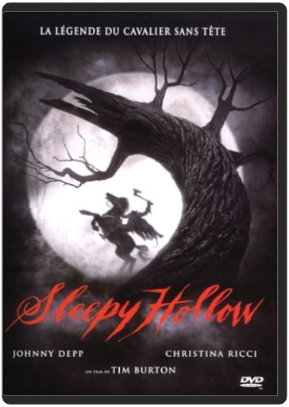

sin city - édition collectorrobert rodriguez sin city - édition collectorrobert rodriguez  Adaptation du comic book d’un des plus grands auteurs / dessinateurs de sa génération, Sin City permet à Robert Rodriguez de peaufiner son style. Visuellement à tomber par terre, avec son noir et blanc d'une classe folle, son casting habité et sa direction artistique méticuleuse, le film réussit à donner vie à de nombreux personnages complexes et touchants. Les hommes sont à la fois victimes et bourreaux, durs et tendres, et se battent pour sauver leur honneur dans un monde gangrené par la corruption. Rodriguez réussit le plus ardu : donner vie à de purs fantasmes de cinéma en jouant le premier degré. La compréhension qu’il donne de l'univers de Miller alliée à l’efficacité redoutable de sa mise en scène offre à Sin City une richesse narrative et une force visuelle des plus réjouissantes. Reprenant les mêmes menus très réussis de l’édition simple, l’édition collector offre un second disque dédié à des suppléments qui font la part belle aux impressions de tournage du réalisateur et des interprètes. A noter le module sur l’univers de Frank Miller, qui dresse un petit portrait des œuvres majeures de Miller au travers d’interviews croisées de trois éditeurs / dessinateurs français, dont Enki Bilal. www.ecranlarge.com  the skullsrob cohen the skullsrob cohen The Skulls est un thriller formaté pour "ado", sorti au États-Unis peu de temps après les Souviens-toi l'été dernier et autres Urban Legend. Les acteurs n'ont pas plus de dix-huit ans et sont tous jeunes, beaux et riches. Malheureusement pour eux, ils n'ont pas de chance. Les spectateurs plus jeunes seront d'ailleurs heureux de retrouver Joshua Jackson, l'un des acteurs principaux de la série culte Dawson. Ce dernier joue ici le rôle d'un étudiant modèle. Sportif émérite, il est recruté sur le campus de l'université par une société secrète, les Skulls. À l'origine de la CIA, cette confrérie élitiste est régie par ses propres règles. À l'intérieur, notre jeune étudiant découvre alors, à ses dépens, le véritable visage des Skulls. Le scénario n'est pas sans rappeler celui de La Firme : un jeune homme, plein d'espoirs, cherche à sortir des griffes d'une organisation toute-puissante, au-dessus des lois. La comparaison s'arrête là. Le film manque de rythme, et l'histoire se révèle tout ce qu'il y a de plus classique. Au final, le film est sans surprise mais se laisse regarder avec plaisir. Du côté des bonus, ce DVD ne vous laissera pas sur votre faim puisque vous aurez accès à 10 scènes inédites, un making-of et de nombreux autres suppléments. —Frédéric Danilewski sleepy hollowtim burton L'histoire du cavalier sans tête est un classique des légendes américaines destinées à effrayer les enfants. Basé sur La Légende de Sleepy Hollow, de Washington Irving, ce film mélange frayeur, suspense et sourire : en 1799, un jeune inspecteur de New York, Ichabod Crane, doit résoudre une affaire de meurtres en série par décapitations ! La marque de fabrique de Tim Burton se dégage parfaitement de l'image et de l'adaptation pleine d'humour noir. De plus, grâce aux bonus, vous découvrirez qu'il ne s'agit pas de la première version, cinéma ou téléfilm, à avoir été tournée. À noter aussi, la possibilité de profiter de l'excellente bande-son. Un making of et une série d'interviews plus tard, vous pouvez toujours vous balader sur les pages des six filmographies proposées. De quoi s'offrir un bon frisson post-halloween… —Max Renne  sonatine / jugatsu - édition collectortakeshi kitano sonatine / jugatsu - édition collectortakeshi kitano Sonatine  star wars - coffret collector blu-raygeorges lucas star wars - coffret collector blu-raygeorges lucas La saga inter-galactique la plus populaire du monde va enfin bénéficier d'un son et d'une image HD !  strange dayskathryn bigelow strange dayskathryn bigelow Gros plan sur un il grand ouvert. Enchaînement sur un enclenchement de lecteur CD. Et go ! pour un casse hyper-violent qui combine plan-séquence et caméra subjective : pas de course hallucinants, image bleutée, panique, sirènes de police assourdissantes, poursuite sur les toits, musique survoltée… Ouf ! On reste littéralement scotché par la scène d'ouverture de ce techno-trip de science-fiction qu'est Strange Days. Après les surfers baba-grunge de Point Break, Kathryn Bigelow nous entraîne au bord du gouffre dans le Los Angeles orgiaque et futuriste du 30 décembre 1999 – le film date de 1996. Sur fond de chaos urbain, de gigantesque teuf fin de siècle, de violence policière, de racisme, de folie sexuelle et de télétrip, cette drogue d'un nouveau genre, l'action s'attache aux destins croisés de trois personnages : Lenny Nero, sorte d'ange à la beauté du diable, incarné avec sensualité par Ralph Fiennes (Le Patient anglais) ; Mace, à laquelle Angela Basset prête son physique avantageux ; enfin, Faith, mixte de Courtney Love et de PJ. Harvey, jouée par Juliette Lewis (Tueurs nés). Certes, devant une telle densité de thèmes potentiels, le scénario s'emmêle un peu les pinceaux. N'empêche : quelque part entre Orange mécanique et Blade Runner, ce fantastique techno-thriller – produit par M. Bigelow, James Cameron – fonctionne comme une ligne de coke ou un trip à l'ecstasy : énergique, paranoïaque, euphorique. —Sylvain Lefort  studio ghibli - 1979 - le château de cagliostrohayao miyazaki studio ghibli - 1979 - le château de cagliostrohayao miyazaki Quick Shipping !!! New And Sealed !!! This Disc WILL NOT play on standard US DVD player. A multi-region PAL/NTSC DVD player is request to view it in USA/Canada. Please Review Description. |


 Made with Delicious Library
Made with Delicious LibraryNancy, State zipflap congrotus delicious library Thomas, Julien